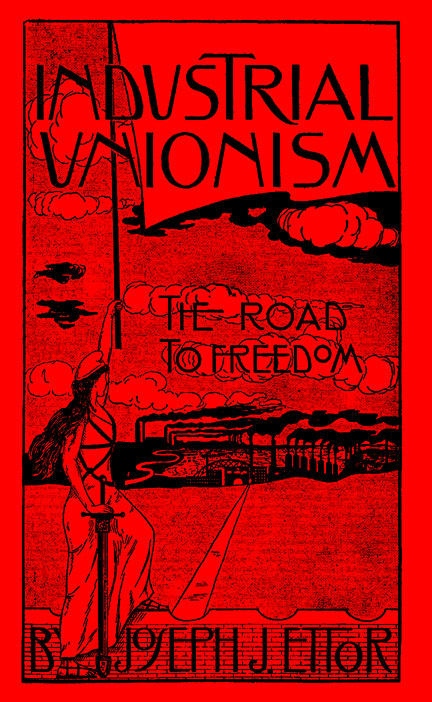
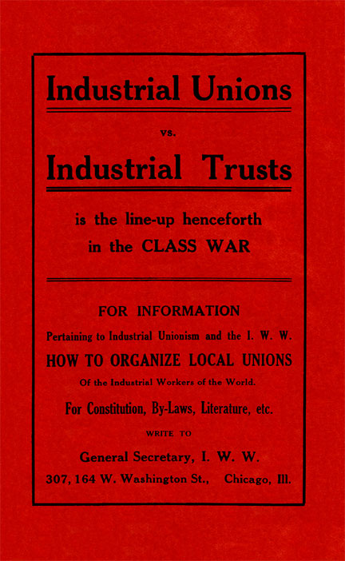

Industrial Unionism: The Road to Freedom
FOREWORD
The struggle of the wage workers for industrial freedom is fast assuming proportions that challenge the attention of all classes in present day society.
The oppressive conditions under which the vast majority of wage workers must live is forcing the members of that class to seek for a means of relief. That search for relief must of necessity be a question for knowledge. It is with the sincere hope of being able to in some measure fill this demand for knowledge on the part of my class that this pamphlet has been written..
With the ending of the revolt of the slaves in the Textile Mills of the New England Textile districts, the struggle breaks out in the Lumber districts of the South. The answer of the masters of the bread in the Southern country is the same as the answer of their kind in the far away New England States. That answer is, the leaden bullet of the hired thug and the soldier; the club of the special policeman; the disease-ridden jail with the shadow of the gallows ever present. Cultured New England is joined by the aristocratic South in a feast of blood.
It is, therefore, fitting that I should dedicate this pamphlet to fellow worker A. L. Emerson and his sixty-four fellow workers who are now awaiting trial in the courts of Louisiana, because they dared to raise the banner of revolt against the reign of the Lumber Kings of the South. Therefore, to them it is dedicated, and I sincerely hope that its sale will help to provide the funds necessary to secure for them their freedom, that they may once more take up the work of the Cause they have served so well in the past.
Joeseph J. Ettor
Essex County Jail, Lawrence, Mass., June, 1913.
INDUSTRIAL UNIONISM: THE ROAD TO FREEDOM.
Rising out of conditions that have long become unsupportable, that were never intended should benefit but the few, conditions that are a living outrage on the lives of the working class of the nation; Industrial Unionism, the One Big Union, of all the workers of all trades and all industries; striving energetically and with devoted enthusiasm for the one burning ideal and hope of the world's toilers Solidarity to the end of accomplishing final and complete industrial emancipation, is no longer a mere plan or scheme to foist upon the wage workers of the land.
Witness France, very recently and most successfully the efforts and triumph in England. Hear the echo and rumbling. The masters at home will soon have to deal with it much as they may dislike to or pretend and prate that the “American wage workers are too level-headed and steady to run off at a tangent like the hordes of Europe.”
It is now a living force, a movement aiming at certain immediate objects and imbued with definite and lofty principles, applying up-to-date tactics that mean ultimate success. Not seeking to live on the tradition, history and glory of a past, but is a determined and enthusiastic effort on the part of conscious workers to live and struggle for better working conditions now and never lose sight of the main object—Emancipation.
Hitherto the effort has been ignored, laughed at even by men and women that pre-tended very noisily to know the aims and hopes of labor. This element has arrogated to itself the right to program the workers' activities. But in spite of opposition, open and secret, by self-appointed guardians and enemies, the ideas and the movement is reaching a point that compels attention particularly from the enemy. It has come on the floor for discussion and all amendments offered, side-stepping done, calumny, efforts to postpone and conciliate, will neither adjourn nor abate the discussion.
It is said that our ideas are impractical. That is true. From the standpoint of old institutions, interests and their beneficiaries; the new is always impractical.
We also hear it said that our efforts are dangerous. Yes, gentle reader, our ideas, our principles and object are certainly dangerous and menacing, applied by a united working class would shake society and certainly those who are now on top sumptuously feeding upon the good things they have not produced would feel the shock.
OUR PRINCIPLES—OUR AIMS.
“The working class and the employing have nothing in common.”
That is more and more forcibly and eloquently being brought home to our class. Whatever failure the agitator may make in impressing the toilers of the conflict of interests between employers and employees, is most eloquently and convincingly impressed now as in the past, by the policemen's clubs, the whip and the mace of State troopers, militiamen's bayonets, soldiers' machine guns, jails, bull pens and scaffold, and such other “civilized weapons and methods” that capitalism needs to impress on the slaves the sanctity of property rights and “freedom to labor.”
Certainly there can be no common interests between those who own the tools, the machines, factories, mines, mills and land, with the workers who do all of the producing. One class does all the work, produces all, suffers all the hardships necessary to accomplish the task. The other class owns, but does not know, nor cares to know, how to produce wealth, yet persists by rights that it labels “legal” and otherwise to live upon what it does not produce.
“There can be no peace so long as hunger and want are found among millions of working people, and the few who make up the employing class have all the good things of life.”
One class works long hours under conditions generally and necessarily established by and suitable to the masters of industry, receives low wages, so that there may be high dividends and profits for the masters. For it must be borne in mind longer hours mean greater wealth produced, low wages mean greater profits for the capitalists. Shorter hours mean less production by each worker or group of workers, therefore the expense to the masters is greater to produce a certain amount of wealth. High wages, shorter hours, better shop conditions that will protect life and limb are objected to by the capitalist for a thousand and one “reasons,” but really because it all means greater cost—thus less dividends—resulting in less palaces, less automobiles, less silk dresses for their wives and daughters.
To the working class, shorter hours means less exertion of energy, longer lives, more workers employed, less competition for jobs, higher wages, more bread, better houses, happier lives.
Members of the upper class are known for eating too much. Members of the laboring class die for want of enough to eat.
Who can be so stupid or knavish as to talk of peace between these two classes?
And yet there are some, quite a few, who do so, particularly after a feast at a Civic Federation meeting.
"Between these two classes a struggle must go on until the workers of the world organize as a class, take possession of the earth and the machinery of production and abolish the wage system.”
We can just about hear a chorus of well kept and well fed ones, “All this is wrong,” “You will thus overthrow all established usages, laws, customs and institutions.”
But the conscious worker who knows what springs guide the minds and mouths of the maintained ones shout, “Hosanna! That is right! More power to you!”
“These are ideas subversive to our civilization, they strike at the very roots of things, they endanger the rights of private property upon which our Republic is based,” hints the owner of industries, the exploiter and despoiler of labor.
“Against all laws, constitution, precedents and authority, it's a conspiracy; yes, sedition, treason,” says the man in legal vesture.
“Free lovers and enemies of institutions long established and respected,” thunders the moralist who may be drawing his rents from gay houses.
“They would destroy our union and en-danger the amicable relations now existing between employers and employees,” croaks the “labor leader” of the craft union.
“For the interest of civilization, that society may be saved and in line with our duties, the place for folks holding such dangerous notions is the jail,” cry the police.
“Lynch them,” shouts the whole motley crew who benefit greatly from the present economic arrangement.
“Amen,” sanctimoniously grumbles the black-robed hypocrite who alleges to be the minister of God and a follower of the Lowly Nazarene.
And thus society is defended, saved and blessed.
This motley crew would be indeed ungrateful if they would not offer their defense and hosannas to a society that is so generous to them as to feed and clothe them with the best and yet require no labor from them.
As long as one class performs no function in production only as parasites and social sponges, is too lazy and impotent to work, but lives and riots in plenty—and our class, the wealth producers—produce all, makes all, digs all the coal; in a word, makes life worth while and brings into being by its labor and travail all that life necessitates, and yet lives in want, is paid wages which at best and highest only represents a part of the entire product; a struggle is inevitable.
Those who are serious and who respect themselves and their education will not dispute that labor with its hands and brains produces all wealth. We industrial unionists hold, and every day experiences tend eloquently to prove and convince all that our contention is correct.
In the ratio as capitalists grow stronger and more secure in their ownership of industry, more and more parasitical in production; they also grow arrogant with the feeling and satiety of power; they become tyrannical in their conduct towards the workers; just in that ratio the laboring class develops, in power by virtue of the great numbers assembled together in various industries, in consciousness by the experiences and lessons it receives in its daily struggle for more bread and greater economic rights. Its vision extends further than mere shorter hours, higher wages and matters of that nature.
It acquires class feelings, class knowledge and conceptions with a realization that, struggle as it may, gain as many victories as possible; the age-long class conflict can only come to an end when “the workers of the world organize as a class,” change society from the very basis through the medium and power of their industrial organization and keep on producing wealth, not as hitherto, only for the partial benefit of the producers, but on the principle that “Labor is the producer of all social wealth, therefore, to the producers belongs the full product of their efforts.”
Unquestionably from the standpoint of the coupon clippers and their retainers, anything the workers do that either tends to merely obtain more bread or any efforts that tend to unsaddle the masters altogether is considered wrong, ethically, legally, religiously and by every other measurement.
From the standpoint of the masters those who aid, abet and sanctify their right to plunder the workers are considered paragons of virtue and good citizenship.
A scab who works while men and women are struggling for humane conditions is hailed as a true type of “an American hero.” Those who willingly work for low wages, satisfied to work long hours under miserable conditions, never even whimper, refuse to band with their fellows in a common effort to better things, are styled “The independent American citizen who refuses to allow the pernicious doctrines of labor agitators to sway them from their patriotic duties,” etc. The judges, the procurators of the State, the police and soldiers, who shoot, club and imprison in the interest of capitalist property and social interests are hailed as the “Saviors of Society.” Those who, under the cloak of religion and alleged loyalty of the Nazarene, offer prayers to the rich and command the poor to be satisfied with their lot on earth, who apologize and offer extenuations for child labor in the mines and factories—are set up as the very pillars and columns of Order, Law and Religion.
But if history teaches right, we know this much—right and wrong are relative terms —and it all resolves into a question of Power. Cold, unsentimental Power. From the standpoint of accepted law, morals, religion, etc., the capitalists are considered right and justified in their control and ownership of industries and exploitation of labor because they have the means to hire, and have organized a gang that skulks under the name of “Law, Order and Authority,” that is well paid and well kept to interpret and execute laws in favor of the paymasters of course.
Our country has been ravaged and stolen by industrial pirates and yet, learned judges have decreed that it was “legal.” Attorneys and politicians have written lengthy briefs and argued long and eloquently, preachers have spoken wise sermons; in short, whatever the king has done, the courtiers have most humbly considered right and the guards and men-at-arms been ready to see that the slaves did not rebel against it all.
Prepared to carry out the capitalists' every will, this kept-crew is well paid, entrenched and armed, and while it hides under the silk skirts of Mesdames “Law and Order,” is as desperate and brutal a crew as ever scuttled a ship or quartered a man.
Yet with this alone Capitalism could not live.
It is the false conception and consciousness of the vast majority of the workers who hold up the hands of the master class, and in their ignorance look upon the rich as the symbols of all that is virtuous, noble and wise, while if they were conscious of the facts they would look upon private property of socially necessary things as the great social crime and the owners and upholders as so many social criminals, that makes it possible for it to live.
New conceptions of Right and Wrong must generate and permeate the workers. We must look on conduct and actions that advance the social and economic position of the working class as Right, ethically, legally, religiously, socially and by every other measurement. That conduct and those actions which aid, helps to maintain and gives comfort to the capitalist class, we must consider as Wrong by every standard.
The wage system implies the existence of two economic classes. Under it the workers suffer, it means no end of strife, therefore from the standpoint of the workers it is Wrong and it is Right to get together as a class and abolish the wage system, and in its place erect the Co-operative Common-wealth, the Rule of the Proletariat.
"We find that the centering of the management of industries into fewer and fewer hands makes the trade unions unable to cope with the ever-growing power of the employing class.”
Because they may have some skill and look upon it as so much property, some workers in the past have organized into trade unions; that is, a union for each separate trade. This system of unionism is typified by the American Federation of Labor. It is an organization of one separate union for each trade, although trades may be employed in the same factory or industry.
It is a “unionism” that may have been good enough in its day, when learning a trade was necessary and the vast majority of the workers were required to be crafts-men. The trade unions were useful in their day, same as the ox cart was useful and most essential; yes, of utmost utility in transportation, but it had to make way for something more efficient.
With the ever greater development of machinery and concentration of industries, trade lines are erased, the workers more and more are reduced to one common level of labor and servitude.
The capitalists—not because of any spirit or feeling of Solidarity, but in the struggle among themselves for the products they steal from labor have been driven to concentrate their economic power into huge industries, and in turn the small citizen alliance has made way for the One Manufacturers' Association or Employers' Association. They have done away with the trade lines. Their associations are not composed of employers exploiting the workers of one trade, but covers the exploitation of workers of every trade in the industry. So that the “trade union” has become obsolete and now only manages to live on the recollections and bonds of age and traditions.
"The trade unions foster a state of affairs which allows one set of workers to be pitted against another set of workers in the same industry, thereby helping defeat one another in wage wars.”
With the pernicious system of each trade organizing and looking out for itself, signing contracts and agreements with the employers that bind the workers of a certain craft for a definite and long term of years to work certain hours under certain conditions for certain wages without taking into account and consideration the rest of the workers in the same establishment or industry, workers are divided and defeated.
Experience and history for the past few years abound with instances where workers organized into trade unions in spite of themselves, helped the employers defeat other workers, organized as well as unorganized, skilled as well as unskilled. Cases are too numerous to mention where we have witnessed one set of “union men” scab on another set of workers, also unionists, who were struggling for better conditions. Yes, we call it scabbing, union workers remained at work alongside of strikebreakers, aided, abetted and gave comfort, even to the hauling and furnishing food to scabs in strike-bound places.
We call such conduct by its proper name, hideous as it may sound, the “pure and simple” trade union “leaders” call it “non-interference” or “trade autonomy.”
"Moreover, the trade unions aid the employing class to mislead the workers into the belief that the workers have interests in common with their employers.”
Trade unions invariably are pledged to the program of the “co-operation of the classes” and prate of the community and identity of interests between laborers and capitalists. The leaders are always talking of the “brotherhood of capital and labor.”
Out of such dangerous teachings comes the justification and the annual feasts, the Civic Federation dinners at the Waldorf Astoria (New York City), where captains of industry, men like Andrew Carnegie, August Belmont and a host of other labor exploiters, whose opposition to the efforts and hopes of labor is well known and has been marked in historical instances, meet in jolly and sumptuous feast with Samuel Gompers, President of the American Federation of Labor, John Tobin of the Boot and Shoe Workers, John Golden of the United Textile Workers, and so on ad infinitum et nauseam.
They gather presumably to “discuss and help to solve the labor problems” but in fact to partake of the flesh pots they have stripped from labor, to pull the wool over the eyes of the wage workers so that the chains of wage labor may be linked ever more secure on the limbs of our class, that our hopes and ideals may be dragged in the mire and capitalists given assurance of a long day more of safe and contented slavery on the part of the wealth producers.
And now when the history and objects of the Civic Federation have become notorious and its evil practices and outrages are evoking from the many times defeated and betrayed workers curses and protests that reach to the heavens, a second edition of the Civic Federation has been organized under the name of the “Militia of Christ.” Conceived in the sacristy, born on the floor of the St. Louis, Mo. (1910) convention of the American Federation of Labor, held at baptism by preachers and labor leaders, it is a new conjure to keep the workers in a mental stupor and economic slavery.
“These conditions can be changed and the interest of the working class upheld only by an organization formed in such a way that all its members in any industry or in all industries, if necessary, cease work whenever a strike or lockout is on in any department thereof, thus making an in-jury to one an injury to all.”
The Industrial Workers of the World is the “organization formed in such a way.” The I. W. W. does not organize by trades, but by industries. All the workers in any plant, factory, mine, mill or any given industry in a given locality organize in one Local Industrial Union. All the local industrial unions of a given general industry are banded together in the National Industrial Union. The National Industrial Unions are banded again stronger in the Industrial Department and then all Departments, six in all, are brought under one head, the General Administration of the I. W. W. One Big Union of all workers, welded together in such a manner that, imbued with the war cry “an injury to one is an injury to all,” all its members can act together in fighting the common enemy.
Industrial Unionists disdain to lower the history and ideals of the working class by entering into contracts or agreements with employers whereby the conditions that are generally forced by the stronger economic power are made a basis for any stated period.
The workers in order to uphold what they are able to wrest from employers must be ever alert and ready with weapons that spell Solidarity and if they wish to advance further, their union must be an army ready to move on short notice and take quick decisions, otherwise it is lost. To be able to do these things it must be free not only in limbs but mentally. Contracts and agreements tend to foist a false feeling of security on the worker and on the day of need—defeat looms up because of the false security—lack of preparations.
"Instead of the conservative motto, 'A fair day's wages for a fair day's work' we must inscribe on our banner the revolutionary watchword, 'Abolition of the wage system.'"
As we have stated before there is no gain-saying that Labor produces all wealth. Capitalism is based on the robbery of the workers. Those who own industries but do not work in them, pay wages to the workers and keep profits to themselves. But both, profit and wages, are only the product of Labor. Wages are part of the total product paid to labor. Profit, generally the biggest part, capitalists appropriate to themselves and call it their “legal share.”
Industrial Unionists know nothing of “legal share” nor of “reasonable profits,” as all wealth, however little, acquired with-out labor is robbery. Industrial Unionists know no bargain to life. To talk of a “fair day's work” is to talk of the pack horse with a fair load on his back; to talk of a “fair day's wage” is to talk of a reasonably filled nose bag for the horse that has done the packing.
“Fair day's work and fair day's wages” imply a question of right and wrong. How-ever, this is a class society composed and divided in robbers and robbed and each class has its own notion of right and wrong, fair and unfair. At any rate, if labor produces all wealth—what else is a fair day's work except the one the workers will legislate in their union hall stating how many hours to work and that fair payment will be the en-tire products to the producers?
Let a sordid and conservative world talk itself out of its senses and be exploited to the marrow by capitalists. Let the paraders keep on their banner the motto of the middle ages guilds “a fair day's wage for a fair day's work.”
We workers of the twentieth century will march steady with heads erect, our hearts beating in unison and resolved with our aim fixed on the new society and on our standard unfurled to the free breeze, we have in-scribed the rallying cry and glowing hope of the world's workers, “LABOR IS ENTITLED TO ALL IT PRODUCES.”
"It is the historic mission of the working class to do away with capitalism. The army of production must be organized, not only for the every day struggle with capitalists, but also to carry on production when capitalism shall have been over-thrown. By organizing industrially we are forming the structure of the new society within the shell of the old.”
Such are “dangerous” notions to capitalism. The Industrial Workers of the World propagates these very ideas, it has and will continue—of this we feel sure and satisfied—to meet with the opposition of the employing class. It is to be expected. Such a course on their part but proves the correctness of our principles.
The employers well realize that once the workers begin to seriously organize as a class, with class hopes and ideals, and look out for themselves as a class, with interests distinct and opposed to all other classes, that once the spirit of solidarity takes firm hold in the hearts and minds of the workers, their (capitalists) occupation as parasites will be gone. The danger and fear of having to go to work to live is an ever recurring night-mare that occurs to them ever in their hours of great revelry and riot. They would if reduced to extremes, be willing to make any concession always with the feeling that they can successfully juggle matters so as to keep in the saddle. Therefore is accounted their readiness to look with favor to movements that do not aim at changing the economic relations between wage workers and capitalists.
Compromise for pelf and power has been the one great weapon of the capitalists even in their own day of struggle against the then economic and ruling class. It is a weapon and a means whereby they seduce the rebellious spirit of the workers. A time serving policy. They have cause to fear and dread at the rule of labor.
But you, fellow workers in labor, comrades in suffering, what have you to fear from such program?
You, the hundreds of thousands, aye the millions, who have no shops, no mines, no mills, no land, no home!
You, whose constant companion is want and poverty, whose lot is long hours of hard work for meagre pay, who have only your labor power — yourselves — to sell to a master — in the labor market that is ever crowded — as the only means of making a living.
You, a member of the working class, that produces annually an average of $2,400.00 worth of wealth and receives less than $450.00 in wages.
You workers, whose sisters, wives and mothers have been driven out of the homes into mills and factories to compete with you and bring your wages down.
You, whose children have been driven out of the playground and kidnapped from the schoolhouse and strapped to the machine in the mills and shops, that their young lives, their very laughter and joy denied, may be rolled and coined into so many dollars for the pleasure and satisfaction of a few Industrial Herods.
You, of the wage working class, of whom it was required that in one year over forty thousand workers — men, women and children — should be killed in the industries of this nation, burned to death as in the Triangle fire of New York City, their lives snuffed out in coal mine explosions and in a thousand various ways.
The blood of these workers, it seems, was needed to grease and spur the machines in the mills of our masters. Their lives sacrificed all because human beings are cheaper than the application of safety appliances which cost money and would reduce profits; and, since the great God to whom capitalists offer their prayers is PROFIT, human life is destroyed and workshops are turned into so many charnel houses.
So we ask you who, when you are no longer able to live, you ask for more pay and are forced to strike and in reply to your petitions and pleading for more bread receive bayonet thrusts, rifle shots, etc., “What have you, any of you, to lose by opposing the present economic system, banding yourselves with us in one common bond of Solidarity and devotion as industrial unionists to the end of bettering our every-day conditions in the factories, mines and mills?”
What have any of us to lose if we band together in ONE BIG UNION to the end and by it as a medium transform the present system of industrial despotism and economic inequality into one of Industrial Freedom and Equality?
We would lose our chains, our miseries, but gain the world for all the workers, a world fit for men and women to live their lives in freedom of love and labor.
Our opponents may say that this would be “expropriation,” but we will let the poet reply for us :
The Cry of ToilWe have fed you all for a thousand years, There's never a mine blown skyward now We have fed you all for a thousand years, |
Industrial Unionism bids all workers rally to its standard. To all sons and daughters of toil who yearn for a better day we appeal for Solidarity.
Let a sordid crowd of kept men and women imbued with sordid ideals oppose this new redeeming movement of labor—it is bound to succeed in spite of all opposition, whether it be that which show its hideous form in the uniform of the hired and armed Hessians with rifle in hand, or it intrigues and conjures under the cloak of Law, Authority, Order, Religion, et al., or even under the greasy smile and brass face of the "labor leader.” This is the movement of the common workers and will triumph. It has received its baptism of fire in a dozen hard-fought battles from one end of this broad land to the other. It knows no retreat, this intrepid army, heretofore fighting against great odds, that at all times tested the capacity and devotion of its members, has been ignored and made small of.
But in spite of all opposition it has not shirked a battle yet, and will keep up its determination never to stop until the oriflamme of labor shall float over a world of free work shops where freemen and women will in love and freedom produce wealth for their own benefit as Workers.
Oh, Workers! Band together.
Organize! Organize Right!
Organize your Power!
Organize for Victory!
Speed the day of labor emancipation. Industrial Freedom, Labor, Liberty, Love and Happiness for all who toil.
Transcribed by J. D. Crutchfield from a scan of the original kindly provided by Lisa and Jon Schindler. Many, many thanks to them! Mr. Schindler always outbids me for I. W. W. literature on eBay, but he very generously gives me scans of it which Ms. Schindler laboriously makes.